대기환경기사 (2014-05-25 기출문제)
1과목: 대기오염 개론
1. 풍속이 5m/sec, 높이 50m, 직경 2m, 배출가스 속도 15m/sec, 배출가스 온도 127℃ 인 굴뚝이 있다. 대기 중의 공기온도가 27℃ 일 때 아래의 홀랜드식을 이용하여 유효굴뚝높이를 구하면? (단, 1기압을 기준으로 하며 대기의 안정도는 중립조건 홀랜드식은 아래식을 적용한다.)
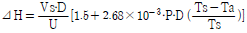
- 약 67m
- 약 78m
- 약 84m
- 약 92m
(정답률: 63%)

2. 실내공기 오염물질인 라돈에 관한 설명으로 가장 거리가 먼 은?
- 주기율표에서 원자번호가 238번으로, 화학적으로 활성이 큰 물질이며, 흙속에서 방사선 붕괴를 일으킨다.
- 무색, 무취의 기체로 액화되어도 색을 띠지 않는 물질이다.
- 반감기는 3.8일로 라듐이 핵분열 할 때 생성되는 물질이다.
- 자연계에 널리 존재하며, 건축자재 등을 통하여 인체에 영향을 미치고 있다.
(정답률: 83%)
3. 1시간에 10000대의 차량이 고속도로 위에서 평균시속 80km로 주행하며, 각 차량의 평균탄화수소 배출률 0.02g/sec 이다. 바람이 고속도로와 측면 수직방향으로 5m/sec로 불고 있다면 도로지반과 같은 높이의 평탄한 지형의 풍하 500m 지점에서의 지상오염농도(㎍/m3)는? (단, 대기는 중립상태이며, 풍하 500m에서의 δz = 15m,
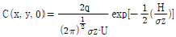
를 이용)- 26.6 ㎍/m3
- 34.1 ㎍/m3
- 42.4 ㎍/m3
- 51.2 ㎍/m3
(정답률: 56%)
4. 지상으로부터 500m까지의 평균 기온감율이 0.85℃/100m 이다. 100m 고도의 기온이 15℃라 하면 300m 에서의 기온은?
- 13.30℃
- 12.45℃
- 11.45℃
- 10.45℃
(정답률: 71%)
5. Fick의 확산방정식을 실제 대기에 적용하기 위해 추가하는 가정으로 가장 거리가 먼 것은?
- 바람에 의한 오염물의 주(主)이동방향은 X축이다.
- 하류로의 확산은 오염물이 바람에 의하여 x축을 따라 이동하는 것보다 강하다.
- 과정은 안정상태이고, 풍속은 x, y, z 좌표 시스템내의 어느 점에서든 일정하다.
- 오염물은 점오염원으로부터 계속적으로 방출된다.
(정답률: 75%)
6. 바람을 일으키는 힘 중 기압경도력에 관한 설명으로 가장 적합한 것은?
- 수평 기압경도력은 등압선의 간격이 좁으면 강해지고, 반대로 간격이 넓으면 약해진다.
- 지구의 자전운동에 의해서 생기는 가속도에 의한 힘을 말한다.
- 극지방에서 최소가 되며 적도지방에서 최대가 된다.
- gradient wind 라고도 하며, 대기의 운동방향과 반대의 힘인 마찰력으로 인하여 발생한다.
(정답률: 68%)
7. 다음 중 지구온난화 지수가 가장 큰 것은?
- PFCS(과불화탄소)
- HFCS(수소불화탄소)
- CH4
- N2O
(정답률: 69%)
8. 대류권 내 건조대기의 성분 및 조성에 관한 설명으로 옳지 않은 것은?
- 농도가 매우 안정된 성분으로 산소, 질소, 이산화탄소, 아르곤 등이다.
- 이산화질소, 암모니아 성분은 농도가 쉽게 변하는 물질에 해당한다.
- 오존의 평균농도는 0.1~1ppm 정도로 지역별 오염도에 따라 일변화가 매우 크다.
- 질소, 산소를 제외하고 가장 큰 부피를 차지하고 있는 물질은 아르곤이다.
(정답률: 79%)
9. 다음은 어떤 오염물질에 관한 설명인가?
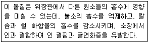
- 불화수소
- 자일렌
- 알루미늄
- 니켈
(정답률: 73%)
10. 석면폐증에 관한 설명으로 가장 거리가 먼 것은?
- 석면폐증은 폐의 석면분진 침착에 의한 섬유화이며, 흉막의 섬유화와는 무관하다.
- 석면폐증은 폐상엽에서 주로 발생하며, 전이는 되지 않는 편이다.
- 폐의 섬유화는 폐조직의 신축성을 감소시키고, 혈액으로의 산소공급을 불충분하게 한다.
- 석면폐증은 비가역적이며, 석면노출이 중단된 이후에도 악화되는 경우가 있다.
(정답률: 75%)
11. 입자상 물질의 크기 중 "마틴직경(Martin Diameter)"이란?
- 입자상 물질의 그림자를 2개의 등면적으로 나눈 선의 길이를 직경으로 하는 것
- 입자상 물질의 끝과 끝을 연결한 선 중 가장 긴 선을 직경으로 하는 것
- 입경분포에서 개수가 가장 많은 입자를 직경으로 하는 것
- 대수분포에서 중앙입경을 직경으로 하는 것
(정답률: 85%)
12. 광화학 반응에 관한 설명으로 가장 거리가 먼 것은?
- 광화학 반응에 의한 생성물로는 PAN, 케톤, 아크롤레인, 질산 등이 있다.
- 대기중에서의 오존 농도는 보통 NO2로 산화되는 NO의 양에 비례하여 증가한다.
- 알데히드는 NO2 생성에 앞서 반응 초기부터 생성되며 탄화수소의 감소에 대응한다.
- NO에서 NO2로의 산화가 거의 완료되고, NO2가 최고농도에 달하면서 O3가 증가되기 시작한다.
(정답률: 49%)
13. 가우시안형의 대기오염 확산방정식을 적용할 때 지면에 있는 오염원으로부터 바람부는 방향으로 250m 떨어진 연기의 중심축상 지상 오염농도(mg/m3)는? (단, 오염물질의 배출량은 5.5g/sec, 풍속은 5m/sec, σy=22.5m σz=12m 이다.)
- 1.3mg/m3
- 1.9mg/m3
- 2.3mg/m3
- 2.7mg/m3
(정답률: 63%)
14. 광화학적 산화제와 2차 대기오염물질에 관한 설명으로 옳지 않은 것은?
- 자외선이 강할 때, 빛의 지속시간이 긴 여름철에, 대기가 안정되었을 때 대기 중 광산화제의 농도가 높아진다.
- PAN은 강산화제로 작용하며, 빛을 흡수하여 가시거리를 증가시키며, 고엽에 특히 피해가 큰 편이다.
- 오존은 폐충혈과 폐수종 등을 유발하며 섬모운동의 기능장애를 일으킨다.
- 오존은 성숙한 잎에 피해가 크며, 섬유류의 퇴색작용과 직물의 셀룰로우즈를 손상시킨다.
(정답률: 74%)
15. 비구형 입자의 크기를 역학적으로 산출하는 방법 중의 하나로 본래의 입자와 밀도 및 침강속도가 동일하다고 가정한 구형입자의 직경은?
- 종말직경
- 종단직경
- 공기역학적직경
- 스톡스직경
(정답률: 68%)
16. 굴뚝의 반경이 1.5m, 평균풍속이 180m/min 인 경우 굴뚝의 유효굴뚝높이를 24m 증가시키기 위한 굴둑 배출가스 속도는? (단, 연기의 유효상승높이 ⊿ h = 1.5 ×
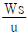
× D 이용)- 13 m/sec
- 16 m/sec
- 18 m/sec
- 32 m/sec
(정답률: 66%)
17. 대기오염물질이 인체에 미치는 영향으로 가장 거리가 먼 것은?
- 금속수은은 수은증기를 흡입하면 대부분 흡수되나 경구섭취시에는 소구를 형성하므로 위장관으로는 잘 흡수되지 않는다.
- 만성 연(Pb)중독 증상의 특징적인 5대 증상으로는 연창백, 연연, 코프로폴리뇨, 호염기성 점적혈구, 심근마비 등을 들 수 있다.
- 베릴륨 화합물은 흡입, 섭취 혹은 피부접촉으로 대부분 흡수된다.
- 염소, 포스겐 및 질소산화물 등의 상기도 자극 증상은 경미한 반면, 수시간 경과 후 오히려 폐포를 포함한 하기도의 자극증상은 현저하게 나타나는 편이다.
(정답률: 57%)
18. 다음 중 아황산가스에 대한 식물별 저항력이 가장 강한 것은?
- 연초
- 장미
- 옥수수
- 쥐당나무
(정답률: 72%)
19. 오존에 관한 설명으로 가장 거리가 먼 것은?
- 대기 중 오존의 배경농도는 0.01~0.02ppm 정도이다.
- 청정지역의 오존농도는 일변화는 도시지역보다 매우 크므로 대기 중 NO, NO2 농도변화에 따른 오존의 광화학적 생성과 소멸을 밝히기에 유리하다.
- 도시나 전원지역의 대기 중 오존농도는 가끔 NO2의 광해리에 의해 생성될 때보다 높은 경우가 있는데 이는 오존을 소모하지 않고 NO가 NO2로 산화되기 때문이다.
- 대류권에서 오존의 생성율은 과산화기의 농도와 관계가 깊다.
(정답률: 57%)
20. 일산화탄소(CO)에 관한 설명으로 가장 거리가 먼 것은?
- CO는 토양박테리아에 의해 이산화탄소로 산화됨으로써 대기 중에는 제거되거나 대류권 및 성층권에서 일어나는 광화학 반응에 의해 제거되기도 한다.
- 대기 중에서 CO의 평균 체류시간은 5~10년 정도로 대기 중 배경농도는 남반구에서는 0.1~0.5ppm정도, 북반구에서는 1~2ppm정도이다.
- 강우에 의한 영향을 거의 받지 않으며, 유해한 화학반응을 거의 일으키지 않는 편이다.
- 풍향과 풍속이 일정한 경우 도로 부근의 농도는 교통량과 비례하여 CO량이 증가되는 경향을 보인다.
(정답률: 64%)
2과목: 연소공학
21. 연소학에서 사용되는 무차원 수 중 "Nusselt number"의 의미로 가장 적합한 것은?
- 난류확산의 특성시간에 대한 화학반응의 특성시간의 비
- 전도열 이동속도에 대한 대류열 이동속도의 비
- 화염신장율
- 온도 확산속도에 대한 운동량 확산속도의 비
(정답률: 56%)
22. 가솔린엔진과 디젤엔진의 상대적인 특성을 비교한 내용으로 틀린 것은?
- 가솔린엔진은 예혼합연소, 디젤엔진은 확산연소에 가깝다.
- 가솔린엔진은 연소실 크기에 제한을 받는 편이다.
- 디젤엔진은 공급공기가 많기 때문에 배기가스 온도가 낮아 엔진 내구성에 유리하다.
- 디젤엔진은 가솔린엔진에 비하여 자기착화온도가 높아 검댕, CO, HC의 배출농도 및 배출량이 많다.
(정답률: 51%)
23. 기체연료에 관한 다음 설명으로 거리가 먼 것은?
- 연료 속의 유황함유량이 적어 연소 배기가스 중 SO2발생량이 매우 적다.
- 다른 연료에 비해 저장이 곤란하며, 공기와 혼합해서 점화하면 폭발 등의 위험도 있다.
- 메탄을 주성분으로 하는 천연가스를 1기압 하에서 -168℃ 정도로 냉각하여 액화시킨 연료를 LNG라 한다.
- 발생로가스란 코크스나 석탄을 불완전 연소해서 얻는 가스로 주성분은 CH4와 H2이다.
(정답률: 63%)
24. 다음 알콜연료 중 에테르, 아세톤, 벤젠 등 많은 유기물질을 용해하며, 무색의 독특한 냄새를 가지고, 모두 8종의 이성체가 존재하는 것은?
- 에탄올(C2H5OH)
- 프로판올(C3H7OH)
- 부탄올(C4H9OH)
- 펜탄올(C5H11OH)
(정답률: 76%)
25. 시간당 1ton의 석탄을 연소시킬 때 발생하는 SO2는 0.31Sm3/min 이었다. 이 석탄의 황 함유량(%)은? (단, 표준상태를 기준으로 하고, 석탄 중의 황성분은 연소하여 전량 SO2가 된다.)
- 2.66%
- 2.97%
- 3.12%
- 3.40%
(정답률: 60%)
26. 미분탄 연소에 관한 설명으로 옳지 않은 것은?
- 스토커 연소에 적합하지 않은 점결탄과 저발열량탄도 사용가능하다.
- 사용연료의 범위가 넒고, 적은 공기비로 완전연소가 가능하다.
- 재 비산이 많고 집진장치가 필요하게 된다.
- 배관 중 폭발의 우려나 수송관의 마모 우려가 없다.
(정답률: 63%)
27. 1mole의 프로판이 완전연소 할 때의 AFR은? (단, 부피기준)
- 9.5
- 19.5
- 23.8
- 33.8
(정답률: 64%)
28. 3%의 황이 함유된 중유를 매일100kL 사용하는 보일러에 황함량 1.5%인 중유를 30% 섞어 사용할 때, SO2 배출량은몇 % 감소하겠는가? (단 중유의 황성분은 모두 SO2로 전환, 중유비중 1.0으로 가정함)
- 30%
- 25%
- 15%
- 10%
(정답률: 56%)
29. 화학반응속도는 일반적으로 Arrhenius식으로 표현된다. 어떤 반응에서 화학반응상수가 27℃일 때에 비하여 77℃일 때 3배가 되었다면 이 화학 반응의 활성화에너지는?
- 2.3 kcal/mole
- 4.6 kcal/mole
- 6.9 kcal/mole
- 13.2 kcal/mole
(정답률: 53%)
30. 다음은 유류연소용 버너에 관한 설명이다. ( )안에 알맞은 것은?
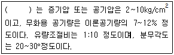
- 유압식 버너
- 회전식 버너
- 저압공기분무식 버너
- 고압공기식 버너
(정답률: 77%)
31. 연소물을 연소하는 과정에서 질소산화물(NOx)이 발생하게 된다. 다음 반응 중 질소산화물(NOx)생성 과정에서 발생하는 Prompt NOx의 주된 반응식으로 가장 적합한 것은?
- N + NH3 → N2 + 1.5 H2
- N2 + O5 → 2NO + 1.5O2
- CH + N2 → HCN + N
- N + N → N2
(정답률: 69%)
32. 발열량에 관한 설명으로 옳지 않은 것은?
- 단위질량의 연료가 완전연소 후 처음의 온도까지 냉각 될 때 발생하는 열량을 말한다.
- 일반적으로 수증기의 증발잠열은 이용이 잘 안되기 때문에 저위 발열량이 주로 사용된다.
- 측정위치에 따라 고위 발열량과 저위 발열량으로 구분 된다.
- 고체연료의 경우 kcal/kg, 기체연료의 경우 kcal/Sm3의 단위를 사용한다.
(정답률: 58%)
33. 중유 중의 황분이 중량비로 S(%), 중유를 매시간 W(L)사용하는 연소로에서 배출되는 황산화물의 배출량(Sm3/hr)은? (단, 표준상태를 기준, 중유의 비중은 0.9, 황산화물은 전량 SO2로 계산한다. )
- 21.4SW
- 1.24SW
- 0.0063SW
- 0.789SW
(정답률: 67%)
34. 메탄올(CH3OH) 10kg을 완전연소할 때 필요한 이론공기량(Sm3)은?
- 20 Sm3
- 30 Sm3
- 40 Sm3
- 50 Sm3
(정답률: 56%)
35. 유동층 연소에 관한 설명으로 거리가 먼 것은?
- 유동화가 행해지는 공기유속의 범위는 한정되어 있으며, 통상 0.3~4m/s 정도이다.
- 비교적 고온에서 연소가 행해지므로 열생성 NOX가 많고, 전열관의 부식이 문제가 된다.
- 연료의 층내 체류시간이 길어 저발열량의 석탄도 완전 연소가 가능하다.
- 유동매체에 석회석 등의 탈황제를 사용하여 로내 탈황도 가능하다.
(정답률: 51%)
36. 탄소 86%, 수소 13%, 황 1%의 중유를 연소하여 배기가스를 분석했더니 CO2 + SO2가 13%, O2가 3%, CO가 0.5%이었다. 건조 연소가스 중의 SO2 농도는? (단, 표준상태 기준)
- 약 590ppm
- 약 970ppm
- 약 1120ppm
- 약 1480ppm
(정답률: 51%)
37. 연료 중 질소와 산소를 포함하지 않는 액체 및 고체연료의 이론건조 배출 가스량 God와 이론공기량 Ao의 관계식으로 옳은 것은?
- God =Ao + 5.6H
- God =Ao – 5.6H
- God =Ao + 11.2H
- God =Ao - 11.2H
(정답률: 63%)
38. 다음 중 공기비(m ＞1)에 관한 식으로 틀린 것은? (단, 실제공기량 : A, 이론공기량 : Ao, 배출가스중 질소량 : N2(%), 배출가스중 산소량 : O2(%))
- m = A/Ao
- m = 21 / ( 21 – O2)
- m = 1 + ( 과잉공기량 / Ao )
- m = N2 / ( N2 - 4.76O2 )
(정답률: 69%)
39. 질소산화물(NOx)생성 특성에 관한 설명으로 가장 거리가 먼 것은 ?
- 일반적으로 동일 발열량을 기준으로 NOx 배출량은 석탄 ＞오일 ＞가스 순이다.
- 연료 NOx는 주로 질소성분을 함유하는 연료의 연소과정에서 생성된다.
- 천연가스에는 질소성분이 거의 없으므로 연료의 NOX 생성은 무시할 수 있다.
- 고정오염원에서 배출되는 질소산화물은 주로 NO2이며, 소량의 NO를 함유 한다.
(정답률: 52%)
40. 기체연료의 연소방법에 대한 설명으로 가장 거리가 먼 것은?
- 확산연소는 화염이 길고 그을음이 발생하기 쉽다.
- 예혼합연소에는 포트형과 버너형이 있다.
- 예혼합연소는 화염온도가 높아 연소부하가 큰 경우에 사용이 가능하다.
- 예혼합연소는 혼합기의 분출속도가 느릴 경우 역화의 위험이 있다.
(정답률: 56%)
3과목: 대기오염 방지기술
41. 온도 25℃ 염산액적을 포함한 배출가스 1.5m3/s를 폭 9m, 높이 7m, 길이 10m의 침강집진기로 집진제거하고자 한다. 염산비중이 1.6이라면 이 침강집진기가 집진할 수 있는 최소제거입경(㎛)은? (단, 25℃에서의 공기점도 1.85×10-5 kg/m·s)
- 약 12㎛
- 약 19㎛
- 약 32㎛
- 약 42㎛
(정답률: 45%)
42. 다음 세정집진장치 중 입구유속(기본유속)이 가장 빠른 것은?
- Jet Scrubber
- Venturi Scrubber
- Theisen Washer
- Cyclone Scrubber
(정답률: 68%)
43. 전기집진장치 내 먼지의 겉보기 이동속도는 0.11m/sec, 5m×4m인 집진판 182매를 설치하여 유량 9000m3/min를 처리할 경우 집진효율은? (단, 내부 집진판은 양면집진 , 2개의 외부 집진판은 각 하나의 집진면을 가진다. )
- 98.0%
- 98.8%
- 99.0%
- 99.5%
(정답률: 56%)
44. 사이클론의 운전조건과 치수가 집진율에 미치는 영향으로 옳지 않은 것은?
- 함진가스의 온도가 높아지면 가스의 점도가 커져 집진율은 저하되나 그 영향은 크지 않는 편이다.
- 입구의 크기가 작아지면 처리가스의 유입속도가 빨라져 집진율과 압력손실은 증가한다.
- 출구의 직경이 작을수록 집진율은 증가하지만 동시에 압력손실도 증가하고 함진가스의 처리능력도 떨어진다.
- 원통의 직경이 클수록 집진율이 증가한다.
(정답률: 57%)
45. 전기집진장치에서 입구먼지 농도가 10g/m3, 출구먼지농도가 0.1g/m3이었다. 출구먼지 농도를 50mg/m3로 하기 위해서는 집진극 면적을 약 몇 배정도로 넓게 하면 되는가? (단, 다른 조건은 변하지 않는다. )
- 1.15배
- 1.55배
- 1.85배
- 2.⑤배
(정답률: 51%)
46. 배출가스 중에 함유된 질소산화물을 처리하기 위한 건식법 중 선택적 중 촉매환원법(SCR)에 대한 기술로 옳지 않은 것은?
- 환원제로는 NH3가 사용된다.
- 질소산화물 전환율을 반응온도에 따라 종모양(Bell-shape)을 나타낸다.
- 질소산화물이 촉매에 의하여 선택적으로 환원되어 질소분자와 물로 전환된다.
- 촉매 선택성에 의해 NO의 환원반응만 있고, 기타 산화반응 등의 부반응은 없다.
(정답률: 50%)
47. 1atm, 20℃에서 공기 동점성계수 υ=1.5×10-5m2/s 일 때 관의 지름을 50mm로 하면 그 관로에서의 풍속(m/s)은? (단, 레이놀즈 수는 2.5×104 이다.)
- 2.5m/s
- 5.0m/s
- 7.5m/s
- 10.0m/s
(정답률: 54%)
48. 전기집진장치의 처리가스 유량 110m3/min, 집진극 면적 500m2, 입구 먼지농도 30g/Sm3, 출구 먼지농도 0.2g/Sm3이고 누출이 없을 때 충전 입자의 이동속도는? ( 단, Deutsch 효율식 적용 )
- 0.013m/s
- 0.018m/s
- 0.023m/s
- 0.028m/s
(정답률: 47%)
49. 냄새물질의 특성에 관한 설명 중 가장 거리가 먼 것은?
- 냄새분자를 구성하는 원소로는 C, H, O, N, S, Cl 등이다.
- 냄새물질로 분자량이 가장 적은 것은 암모니아 이며, 분자량이 큰 물질은 냄새강도가 분자량에 비례하여 강해지는 경향이 있다.
- 냄새물질은 화학반응성이 풍부하다.
- 화학물질이 냄새물질로 되기 위해서는 친유성기와 친수성기의 양기를 가져야 한다.
(정답률: 64%)
50. 배출가스 중 먼지농도가 2500mg/Sm3인 먼지를 처리하고자 제진효율이 60%인 중력집진장치, 80%인 원심력집진장치, 85%인 세정집진장치를 직렬로 연결하여 사용해 왔다. 여기에 효율이 85%인 여과집진장치를 하나 더 직렬로 연결할 때, 전체집진효율(①)과 이 때 출구의 먼지농도(②)는 각각 얼마인가?
- ① 97.5%, ② 62.5 mg/Sm3
- ① 98.3%, ② 42.5 mg/Sm3
- ① 99.0%, ② 25 mg/Sm3
- ① 99.8%, ② 5 mg/Sm3
(정답률: 65%)
51. 다음은 원심송풍기에 관한 설명이다. ( )안에 알맞은 것은?
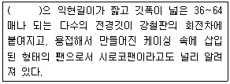
- 레이디얼팬
- 터어보팬
- 다익팬
- 익형팬
(정답률: 75%)
52. 벤츄리스크러버의 액가스비를 크게 하는 요인으로 가장 거리가 먼 것은?
- 먼지 입자의 점착성이 클 때
- 먼지 입자의 친수성이 클 때
- 먼지의 농도가 높을 때
- 처리가스의 온도가 높을 때
(정답률: 73%)
53. 다음 각 집진장치의 유속과 집진특성에 대한 설명 중 옳지 않은 것은?
- 중력집진장치와 여과집진장치는 기본유속이 작을수록 미세한 입자를 포집한다.
- 원심력집진장치는 적정 한계내에서는 입구유속이 빠를수록 효율은 높은 반면 압력손실은 높아진다.
- 벤츄리스크러버와 제트스크러버는 기본유속이 작을수록 집진율이 높다.
- 건식 전기집진장치는 재비산 한계내에서 기본유속을 정한다.
(정답률: 59%)
54. 다음 중 물을 가압 공급하여 함진가스를 세정하는 방식의 가압수식 스크러버에 해당하지 않는 것은?
- Venturi Scrubber
- Impulse Scrubber
- Packed Tower
- Jet Scrubber
(정답률: 70%)
55. 흡수탑에 적용되는 흡수액 선정시 고려할 사항으로 가장 거리가 먼 것은?
- 휘발성이 커야 한다.
- 용해도가 커야 한다.
- 비점이 높아야 한다.
- 점도가 낮아야 한다.
(정답률: 72%)
56. 다이옥신의 처리대책으로 가장 거리가 먼 것은?
- 촉매분해법: 촉매로는 금속 산화물(V2O5, TiO2 등), 귀금속(Pt, Pd)이 사용된다.
- 광분해법: 자외선파장(250 - 340nm)이 가장 효과적인 것으로 알려져 있다.
- 열분해방법: 산소가 아주 적은 환원성 분위기에서 탈염소화, 수소첨가반응 등에 의해 분해시킨다.
- 오존분해법: 수중 분해시 순수의 경우는 산성일수록, 온도는 20℃ 전후에서 분해속도가 커지는 것으로 알려져 있다.
(정답률: 54%)
57. 사이클론의 반경이 50cm인 원심력 집진장치에서 입자의 접선방향속도가 10m/s 이라면 분리계수는?
- 10.2
- 20.4
- 34.5
- 40.9
(정답률: 51%)
58. 입자상 물질에 대한 다음 설명 중 가장 거리가 먼 것은?
- 공기동역학경은 Stoke경과 달리 입자밀도를 1g/cm3으로 가정함으로써 보다 쉽게 입경을 나타낼 수 있다.
- 비구형입자에서 입자의 밀도가 1보다 클 경우 공기동력학경은 stokes경에 비해 항상 크다고 볼 수 있다.
- cascade impactor는 관성충돌을 이용하여 입경을 간접적으로 측정하는 방법이다.
- 직경 d인 구형입자의 비표면적은 d/6이다.
(정답률: 72%)
59. 다음의 악취물의 공기 중 최소감지농도(ppm)가 가장 낮은 것은?
- 아세톤
- 암모니아
- 염화메틸렌
- 페놀
(정답률: 46%)
60. 흡착, 흡착제 및 흡착선택성에 관한 설명으로 옳지 않은 것은?
- 알콜류, 초산, 벤젠류 등은 잘 흡착되는 것에 해당안다.
- 에틸렌, 일산화질소 등은 흡착효과가 거의 없는 것에 해당한다.
- 화학흡착은 흡착과정에서 발열량이 적고, 흡착제의 재생이 용이하다.
- silicagel은 250℃ 이하에서 물 및 유기물을 잘 흡착한다.
(정답률: 55%)
4과목: 대기오염 공정시험기준(방법)
61. 굴뚝 배출가스 중의 황화수소 분석 방법에 대한 설명으로 옳지 않은 것은?
- 메틸렌 블루우법은 황화수소를 질산암모늄을 가한 황산에 흡수시켜 생성되는 메틸렌 블루우의 흡광도를 측정하는 방법이다.
- 메틸렌 블루우법은 시료중의 황화수소가 5~1000ppm함유되어 있는 경우의 분석에 적합하며 선택성이 좋고 예민하다.
- 요오드 적정법은 시료중의 황화수소가 100~2000ppm 함유되어 있는 경우의 분석에 적합하다.
- 요오드 적정법은 다른 산화성가스와 환원성가스에 의하여 방해를 받는다.
(정답률: 38%)
62. 분석대상가스 중 아세틸아세톤함유흡수액을 흡수액으로 사용하는 것은?
- 시안화수소
- 벤젠
- 비소
- 포름알데히드
(정답률: 64%)
63. 화학분석, 일반사항에 관한 규정중 규정된 시약, 시액, 표준물질에 관한 설명으로 틀린 것은?
- 시험에 사용하는 표준품은 원칙적으로 특급시약을 사용한다.
- 표준액을 조제하기 위한 표준용시약은 따로 규정이 없는 한 데시케이터에 보존된 것을 사용한다.
- 표준품을 채취할 때 표준액이 정수로 기재되어 있는 경우는 실험자가 환산하여 기재수치에 '약'자를 붙여 사용할 수 없다.
- "약"이란 그 무게 또는 부피에 대하여 ±10% 이상의 차가 있어서는 안된다.
(정답률: 59%)
64. 굴뚝 배출가그 중 일산화탄소를 정전위전해법으로 분석하고자 할 때 주요 성능기준으로 옳지 않은 것은?(관련 규정 개정전 문제로 여기서는 기존 정답인 1번을 누르면 정답 처리됩니다. 자세한 내용은 해설을 참고하세요.)
- 측정범위: 측정범위는 최고 5%로 한다.
- 재현성: 재현성은 측정범위 최대 눈금값의 ±2% 이내로 한다.
- 드리프트 : 고정형은 24시간, 이동형은 4시간 연속 측정하여 제로 드리프트 및 스팬 드리프트는 어느 것이나 최대 눈금값의 ±2% 이내로 한다.
- 응답시간 : 90% 응답 시간은 2분 30초 이내로 한다.
(정답률: 50%)
65. 흡광광도 분석장치로 측정한 A물질의 투과퍼센트 지시치가 25%일 때 A물질의 흡광도는?
- 0.25
- 0.50
- 0.60
- 0.82
(정답률: 62%)
66. 다음은 배출가스 중 금속화합물을 원자흡수분광광도법으로 분석하기 위한 시료의 전처리(회화법)에 관한 설명이다. ( )안에 알맞은 것은?
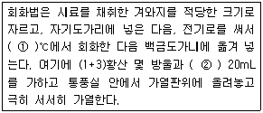
- ① 500, ② HF
- ① 1500, ② HF
- ① 500, ② 4% NaOH
- ① 1500, ② 4% NaOH
(정답률: 34%)
67. 굴뚝에서 배출되는 질소산화물을 페놀디슬폰산법으로 측정하고자 할 때 사용되는 시약이 아닌 것은?
- 암모니아수
- 질산칼륨표준액
- 과산화수소수
- 이소프로필알코올
(정답률: 38%)
68. 다음은 DNPH 유도체화 액체크로마토그래피(HPLC/UV)분석법에 관한 설명이다. ( )안에 알맞은 것은?
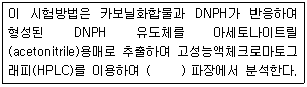
- 자외선(UV) 검출기의 180 nm
- 자외선(UV) 검출기의 220 nm
- 자외선(UV) 검출기의 360 nm
- 자외선(UV) 검출기의 480 nm
(정답률: 50%)
69. 굴뚝 배출가스 중 먼지농도를 반자동식 시료채취기에 의해 분석하는 경우 채취장치 구성에 관한 설명으로 옳은 것은?
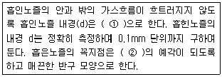
- ① 2mm이상, ② 30°이하
- ① 2mm이상, ② 45°이하
- ① 4mm이상, ② 30°이하
- ① 4mm이상, ② 45°이하
(정답률: 54%)
70. 환경대기중 다환방향족탄화수소류(PAHs)에서 증기상태로 존재하는 PAHs를 채취하는 물질로 적당하지 않은 것은?
- 석영필터(quartz filfter)
- XAD-2수지
- PUF(polyurethane foam)
- Tenax
(정답률: 46%)
71. 비분산 적외선 분석법에 적용되는 용어의 정의로 옳지 않은 것은?
- 정필터형: 측정성분이 흡수되는 적외선을 그 흡수파장에서 측정하는 방식
- 반복성: 동일한 분석계를 이용하여 다른 측정대상을 동일한 방법과 조건으로 비교적 장시간에 반복적으로 측정하는 경우에 측정치의 일치정도
- 비교가스: 시로셀에서 적외선 흡수를 측정하는 경우 대조가스로 사용하는 것으로 적외선을 흡수하지 않는 가스
- 비분산: 빛을 프리즘이나 회절격자와 같은 분산소자에 의해 분산하지 않는 것
(정답률: 48%)
72. 비산먼지측정방법 중 불투명도법에 관한 설명으로 옳은 것은?
- 측정자는 건물로부터 배출가스를 분명하게 관측할 수 있는 3km 이내의 거리에 위치해야 한다.
- 비탁도는 최소 0.5도 단위로 측정값을 기록한다.
- 입자상 물질이 건물로부터 제일 적게 새어나오는 곳을 대상으로 하여 측정한다.
- 비탁도에 10%를 곱한 값을 불투명도 값으로 한다.
(정답률: 46%)
73. 대기 중에 부유하고 있는 입자상물질 시료채취 방법인 하이볼륨 에어샘플러법에 대한 설명으로 틀린 것은?
- 포집입자의 입경은 일반적으로 0.1 - 100㎛ 범위이다.
- 공기흡인부는 무부하(無負荷)일 때의 흡인유량은 보통 0.5m3/hr 범위 정도로 한다.
- 공기흡인부, 여과지홀더, 유량측정부 및 보호상자로 구성된다.
- 포집용 여과지는 보통 0.3㎛ 되는 입자를 99% 이상 포집할 수 있는 것을 사용한다.
(정답률: 54%)
74. 환경대기 중 석면측정방법에 관한 설명으로 옳지 않은 것은?(관련 규정 개정전 문제로 여기서는 기존 정답인 3번을 누르면 정답 처리됩니다. 자세한 내용은 해설을 참고하세요.)
- 지상 1.5m되는 위치에서 10L/min의 흡인유량으로 4시간 이상 채취한다.
- 석면의 굴절률은 약 1.5로 일반 현미경으로는 식별이 어렵고 위상차현미경으로 계수하면 편리하다.
- 석면은 먼지 중 길이 3㎛ 이상이고 길이와 폭이 5:1 이상인 석면 섬유를 계수대상물로 정의한다.
- 계수를 위한 장치로서 현미경은 배율 10배의 대안렌즈 및 10배와 40배 이상의 대물렌즈 가진 위상차 현미경 또는 간접위상차 현미경이 필요하다.
(정답률: 61%)
75. 굴뚝 배출가스 내의 브롬화합물 분석방법 중 자외선 가시선 분광법(흡광광도법)에 관한 설명으로 옳지 않은 것은?
- 흡수액은 수산화나트륨 0.4g을 물에 녹여 100mL로 한다.
- 요오드화 칼륨용액(0.13W/V%)은 요오드화 칼륨 0.13g을 황산(1+5)에 녹여 250mL 메스플라스크에 넣고 물로 표선까지 채운다.
- 과망간산칼륨(0.32W/V%)용액은 과망간산칼륨 0.79g을 물에 녹여 250mL 메스플라스크에 넣고 물로 표선까지 채운다.
- 황산 제2철 암모늄 용액은 황산 제2철 암모늄 6g을 질산(1+1) 100mL에 녹여 갈색병에 넣어 보관한다.
(정답률: 34%)
76. 굴뚝 배출가스 유속을 피토관으로 측정한 결과가 다음과 같을 때 배출가스 유속은?
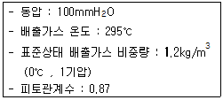
- 43.7m/s
- 48.2m/s
- 50.7m/s
- 54.3m/s
(정답률: 57%)
77. 굴뚝 배출가스 중 총탄화수소 측정을 위한 장치 구성조건등에 관한 설명으로 틀린 것은?
- 총탄화수소분석기는 흡광차분광방식 또는 비불꽃(nonflame)이온크로마토그램방식의 분석기를 사용하며 폭발위험이 없어야 한다.
- 시료채취관은 스테인레스강 또는 이와 동등한 재질의 것으로 하고 굴뚝중심 부분의 10%범위 내에 위치할 정도의 길이의 것을 사용한다.
- 기록계를 사용하는 경우에는 최소 4회/분이 되는 기록계를 사용한다.
- 영점가스로는 총탄화수소농도(프로판 또는 탄소등가 농도)가 0.1 ppmv 이하 또는 스팬값의 0.1% 이하인 고순도 공기를 사용한다.
(정답률: 34%)
78. 수산화나트륨 용액을 흡수액으로 사용하는 굴뚝 배출분석가스 중 흡수액의 농도가 가장 진한 것은?(관련 규정 개정전 문제로 여기서는 기존 정답인 1번을 누르면 정답 처리됩니다. 자세한 내용은 해설을 참고하세요.)
- 비소
- 시안화수소
- 브롬화합물
- 페놀
(정답률: 39%)
79. 연도 배출가스중의 수분이 부피백분율을 측정하기 위하여 흡습관에 배출가스 10L를 흡인하여 유입시킨 결과 흡습관의 중량 증가는 0.82g이었다. 이때 가스흡인은 건식 가스미터로 측정하여 그 가스미터의 가스 게이지압은 4mm 수주이고, 온도는 27℃ 이었다. 그리고 대기압은 760mmHg 이었다면 이 배출가스 중 수분량은(%)?
- 약 10%
- 약 13%
- 약 16%
- 약 18%
(정답률: 36%)
80. 굴뚝배출가스 중 아황산가스를 자외선흡수분석계로 연속측정하고자 할 때 그 분석계의 구성에 관한 설명으로 옳지 않은 것은?
- 광원 : 중수소방전관 또는 중압수은등이 사용된다.
- 검출기: 자외선 및 가시광선에 감도가 좋은 광음극방전관이 이용된다.
- 분광기: 프리즘 또는 회절격자분광기를 이용하여 자외선영역 또는 가시광선 영역의 단색광을 얻는데 사용된다.
- 시료셀: 시료셀은 200-500mm의 길이로 시료가스가 연속적으로 통과할 수 있는 구조로 되어 있으며, 셀의 창은 석영판과 같이 자외선 및 가시광선이 투과할 수 있는 재질로 되어 있어야 한다.
(정답률: 38%)
5과목: 대기환경관계법규
81. 대기환경보전법상 용어의 뜻으로 옳지 않은 것은?
- 대기오염물질이란 대기오염의 원인이 되는 가스·입자상물질 및 악취물질로서 대통령령으로 정한 것을 말한다.
- 기후·생태계변화 유발물질이라 함은 지구온난화 등으로 생태계의 변화를 가져올 수 있는 기체상 물질로서 온실가스와 환경부령으로 정하는 것을 말한다.
- 매연이란 연소할 때에 생기는 유리탄소가 주가 되는 미세한 입자상 물질을 말한다.
- 검댕이란 연소할 때에 생기는 유리탄소가 응결하여 입자의 지름이 1미크론 이상이 되는 입자상물질을 말한다.
(정답률: 51%)
82. 대기환경보전법상 환경기술인 등의 교육을 받게 하지 아니한 자에 대한 과태료 부과기준은?
- 30만원 이하의 과태료를 부과한다.
- 50만원 이하의 과태료를 부과한다.
- 100만원 이하의 과태료를 부과한다.
- 200만원 이하의 과태료를 부과한다.
(정답률: 62%)
83. 다중이용시설 등의 실내공기질 관리법규상 "의료기관"의 라돈(Bq/m3)항목 실내공기질 권고기준은?
- 148 이하
- 400 이하
- 500 이하
- 1000 이하
(정답률: 63%)
84. 대기환경보전법규상 배출시설의 시간당 대기오염물질 발생량을 실측에 의한 방법으로 산정할 때 배출시설의 시간당 대기오염물질 발생량 계산식으로 옳은 것은?
- 방지시설 유입 전의 배출농도 × 가스유량
- 방지시설 유입 전의 배출농도 ÷ 가스유량
- 방지시설 유입 후의 배출농도 × 가스유량
- 방지시설 유입 후의 배출농도 ÷ 가스유량
(정답률: 44%)
85. 다음은 대기환경보전법규상 첨가제 제조기준이다. ( )안에 알맞은 것은?
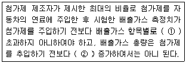
- ① 10% 이상, ② 5% 이상
- ① 5% 이상, ② 5% 이상
- ① 5% 이상, ② 3% 이상
- ① 5% 이상, ② 1% 이상
(정답률: 53%)
86. 대기환경보전법령상 특별대책지역에서 환경부령으로 정하는 바에 따라 신고해야 하는 휘발성유기화합물 배출시설 중"대통령령으로 정하는 시설"에 해당하지 않는 것은? (단, 그 밖에 휘발성유기화합물을 배출하는 시설로서 환경부장관이 관계 중앙행정기관의 장과 협의하여 고시하는 시설 등은 제외한다.)
- 저유소의 저장시설 및 출하시설
- 주유소의 저장시설 및 주유시설
- 석유정제를 위한 제조시설, 저장시설, 출하시설
- 휘발성유기화합물 분석을 위한 실험실
(정답률: 61%)
87. 악취방지법규상 지정악취물질에 해당하지 않는 것은?
- 염화수소
- 메틸에틸케톤
- 프로피온산
- 뷰틸아세테이트
(정답률: 53%)
88. 대기환경보전법규상 가스를 연료로 사용하는 초대형 승용차의 배출가스 보증기간 적용기준으로 옳은 것은? (단, 2013년 1월 1일 이후 제작자동차)
- 1년 또는 20,000km
- 2년 또는 160,000km
- 6년 또는 192,000km
- 10년 또는 192,000km
(정답률: 46%)
89. 대기환경보전법규상 대기오염물질 중 특정대기유해물질에 해당하지 않는 것은?
- 테트라클로로에틸렌
- 트리클로로에틸렌
- 히드라진
- 안티몬
(정답률: 46%)
90. 대기환경보전법규상 한국환경공단이 환경부장관에게 보고해야 할 위탁업무보고사항 중 "자동차배출가스 인증생략 현황"의 보고횟수 기준은?
- 수시
- 연 1회
- 연 2회
- 연 4회
(정답률: 51%)
91. 대기환경보전법규상 대기환경규제지역을 관할하는 시·도지사 등이 그 지역의 환경기준을 달성·유지하기위해 수립하는 실천계획에 포함되어야 할 사항과 가장 거리가 먼 것은? (단, 그 밖에 환경부장관이 정하는 사항은 제외한다.)
- 대기오염예측모형을 이용한 특정대기오염물질 배출량조사
- 대기오염원별 대기오염물질 저감계획 및 계획의 시행을 위한 수단
- 일반환경현황
- 대기보전을 위한 투자계획과 대기오염물질 저감효과를 고려한 경제성 평가
(정답률: 44%)
92. 환경정책기본법령상 미세먼지(PM-10)의 대기환경기준은? (단, 연간평균치 기준)
- 10㎍/m3 이하
- 25㎍/m3 이하
- 30㎍/m3 이하
- 50㎍/m3 이하
(정답률: 54%)
93. 대기환경보전법령상 초과부과금 부과대상 오염물질에 해당하지 않는 것은?
- 포름알데히드
- 황산화물
- 불소화합물
- 염화수소
(정답률: 44%)
94. 대기환경보전법령상 기본부과금 산정기준 중 "수자원보호구역"의 지역별 부과계수는? (단, 지역구분은 국토의 계획 및 이용에 관한 법률에 의한다.)
- 0.5
- 1.0
- 1.5
- 2.0
(정답률: 37%)
95. 다중이용시설 등의 실내공기질 관리법규상 자일렌 항목의 신축 공동주택의 실내공기질 권고기준은?
- 30㎍/m3 이하
- 210㎍/m3 이하
- 300㎍/m3 이하
- 700㎍/m3 이하
(정답률: 59%)
96. 대기환경보전법규상 휘발유를 연료로 사용하는 자동차연료 제조기준으로 옳지 않은 것은?
- 90% 유출온도(℃) : 170 이하
- 산소함량(무게%) : 2.3 이하
- 황함량(ppm) : 50 이하
- 벤젠함량(부피%) : 0.7 이하
(정답률: 52%)
97. 대기환경보전법령상 황사대책위원회의 위원 중 학식과 경험이 풍부한 전문가 중 '대통령령으로 정하는 분야'와 가장 거리가 먼 것은?
- 예방의학분야
- 유해화학물질 분야
- 국제협력분야 및 언론분야
- 해양분야
(정답률: 46%)
98. 대기환경보전법규상 기후·생태계 변화 유발물질 중 "환경부령으로 정하는 것"에 해당하는 것은?
- 염화불화탄소와 수소염화불화탄소
- 염화불화산소와 수소염화불화산소
- 불화염화수소와 불화염화수소
- 불화염화수소와 불화수소화탄소
(정답률: 53%)
99. 대기환경보전법령상 대기오염 경보단계의 3가지 유형 중 "경보발령"시의 조치사항으로 가장 거리가 먼 것은?
- 주민의 실외활동 제한요청
- 자동차 사용의 제한
- 사업장의 연료사용량 감축권고
- 사업장의 조업시간 단축명령
(정답률: 55%)
100. 다음은 대기환경보전법규상 운행차정기검사의 방법 및 기준에 관한 사항이다. ( )안에 알맞은 것은?
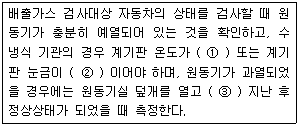
- ① 25℃ 이상, ② 1/10 이상, ③ 1분 이상
- ① 25℃ 이상, ② 1/10 이상, ③ 5분 이상
- ① 40℃ 이상, ② 1/4 이상, ③ 1분 이상
- ① 40℃ 이상, ② 1/4 이상, ③ 5분 이상
(정답률: 42%)
Q = (m_dot * Cp * (T_gas - T_air)) / η
여기서 Q는 열력손실, m_dot은 배출가스 유량, Cp는 배출가스의 비열, T_gas는 배출가스 온도, T_air는 대기 온도, η는 굴뚝의 열효율을 나타낸다.
먼저 배출가스 유량을 구하기 위해서는 다음과 같은 식을 사용한다.
m_dot = A * v
여기서 A는 굴뚝의 단면적, v는 배출가스 속도이다. 따라서 A는 다음과 같이 구할 수 있다.
A = (π * D^2) / 4
여기서 D는 굴뚝의 직경이다. 따라서 A를 구하면 다음과 같다.
A = (π * 2^2) / 4 = π m^2
배출가스 속도는 15m/sec 이므로, 배출가스 유량은 다음과 같다.
m_dot = A * v = π * 15 = 47.1 m^3/sec
다음으로 배출가스의 비열을 구하기 위해서는 다음과 같은 식을 사용한다.
Cp = 1.0⑤ + 0.00017 * T_gas
여기서 T_gas는 배출가스 온도이다. 따라서 Cp를 구하면 다음과 같다.
Cp = 1.0⑤ + 0.00017 * 127 = 1.0279 kJ/kg℃
마지막으로 굴뚝의 열효율을 구하기 위해서는 다음과 같은 식을 사용한다.
η = (T_gas - T_air) / (T_gas - T_ref)
여기서 T_ref는 273K이다. 따라서 η를 구하면 다음과 같다.
η = (127 - 27) / (127 - 273) = 0.44
이제 열력손실을 구할 수 있다.
Q = (m_dot * Cp * (T_gas - T_air)) / η = (47.1 * 1.0279 * (127 - 27)) / 0.44 = 1019.5 kW
다음으로 굴뚝의 유효높이를 구하기 위해서는 다음과 같은 식을 사용한다.
H_eff = H + (Q / (g * A * H))
여기서 H은 굴뚝의 높이, g는 중력가속도, A는 굴뚝의 단면적이다. 따라서 H_eff를 구하면 다음과 같다.
H_eff = 50 + (1019.5 / (9.81 * π * 2^2 / 4 * 50)) = 67.2 m
따라서 유효굴뚝높이는 약 67m이다.